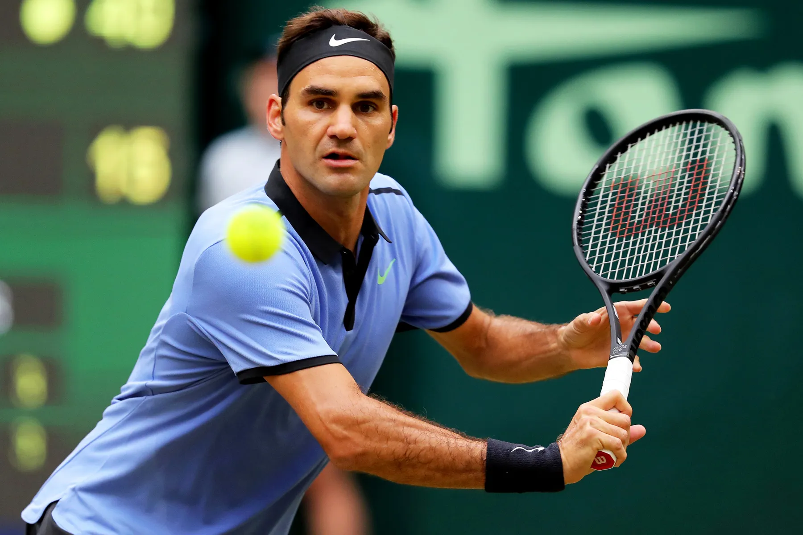

Roger Federer

Roger Federer (born 8 August 1981) is a Swiss former professional tennis player. Federer was ranked world No. 1 in singles by the Association of Tennis Professionals (ATP) for 310 weeks, including a record 237 consecutive weeks, and finished as the year-end No. 1 five times. He won 103 singles titles on the ATP Tour, the second most of all time, including 20 major men's singles titles (among which a record eight men's singles Wimbledon titles, and an Open Era joint-record five men's singles US Open titles) and six year-end championships.
A Wimbledon junior champion in 1998 and former ball boy, Federer won his first major singles title at Wimbledon in 2003 at age 21. Between 2003 and 2009, Federer played in 21 out of 28 major singles finals. He won three of the four majors and the ATP Finals in 2004, 2006, and 2007 as well as five consecutive titles at both Wimbledon and the US Open. He completed the career Grand Slam at the 2009 French Open after three consecutive runner-up finishes to Rafael Nadal, his main rival until 2010. At age 27, he surpassed Pete Sampras's record of 14 major men's singles titles at Wimbledon in 2009.
Major trophies
- 2004-2007-2010-2017-2018 Australian Open
- 2009 French Open
- 2003-2009,2009,2012,2017 Wimbledon
- 2004-2008 US Open